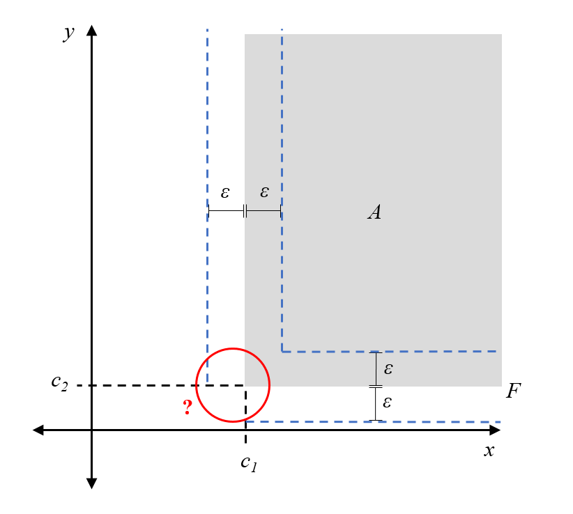

Measuring distances from the frontier
Irena Papst
distance-from-frontier.RmdIn order to perform certain statistical analyses associated with the regression discontinuity design (RDD), one must have an appropriate measure of distance from the frontier of the assignment region. For simplicity, let’s consider the case of two independent variables, but the metric we derive generalizes to \(n\) independent variables.
Let \(F\) denote the frontier, composed of two thresholds \(x = c_1\) and \(y = c_2\). Without loss of generality, assume the assignment rule is \(x \geq c_1\) and \(y \geq c_2\). Hence, the assignment region, \(A\), is where both of these rules are satisfied. Then, the frontier can be written in set notation as \(F = \{ x = c_1 , y \geq c_2 \} \cup \{ y = c_2, x \geq c_1\}\). All of this fancy notation simply describes the following sketch:
The question we want to answer is: what does it mean for a subject to be \(\varepsilon > 0\) away from the frontier?
In the case where either \(x \geq c_1\) or \(y \geq c_2\), the solution is relatively straightforward. The subject satisfies one of the assignment rules already, and so they only must increase (decrease) the other independent variable by \(\varepsilon\) to reach the frontier. For example, if \(x \geq c_1\) for a subject, then they should be considered \(\varepsilon\) away from the frontier if their \(y\) variable is either \(\varepsilon\) more or \(\varepsilon\) less than the threshold \(y=c_2\). Again, a diagram clarifies this description:
All the points on the blue dashed line are \(\varepsilon\) away from the frontier F.
But what happens at the corner of the frontier, where both \(x < c_1\) and \(y < c_2\)?

Here, it helps if we focus on our problem specification. First, recall that \(x\) and \(y\) are independent of each other. This means that a change in one of these variables does not provoke a change in the other. For a subject, this translates to only being able to move in horizontal and vertical motions in this space of attributes, not diagonally. Thus, what we really mean when we say a subject is \(\varepsilon\) away from the frontier, is that adding their horizontal and vertical distance from the frontier gives \(\varepsilon\).
We also implicitly took the minimum distance to the frontier in the above cases; although we could calculate the distance between a point and any point on the frontier, we took the closest frontier point.
Using these two ideas, we can now derive the points that are \(\varepsilon\) from the frontier in the case where both \(x<c_1\) and \(y<c_2\) (we are below the assignment threshold in both variables). First, note that the closest frontier point that satisfies these conditions is the corner \((c_1, c_2)\). The points that are \(\varepsilon\) away from the frontier corner, using our reasoning that subjects can only move horizontally and vertically, would be those whose difference in \(x\)-coordinate, \(\Delta x = |x-c_1|\), and difference in \(y\)-coordinate, \(\Delta y = |y-c_2|\), sums to \(\varepsilon\). Such points form a triangular buffer around the frontier corner:
Formally, this is the \(l_1\)-metric to the frontier, where the distance between a point \(p = (p_x,p_y)\) and a set, \(A\), is abstractly defined as \[\begin{align} l_1(p,A) &= \min_{a=(a_x,a_y) \in A} \{ l_1(p,a)\} \\ &= \min_{a=(a_x,a_y) \in A} \{|p_x-a_x|+|p_y-a_y|\}. \end{align}\]
For a point \(p = (p_1, p_2, ..., p_n) \in \mathbb{R}^n\) and set \(A\) in the same space, this metric generalizes to \[\begin{align} l_1(p,A) = \min_{a = (a_1, a_2, ..., a_n) \in A} \left \{ \sum_{i = 1}^n |p_i - a_i| \right \}. \end{align}\]